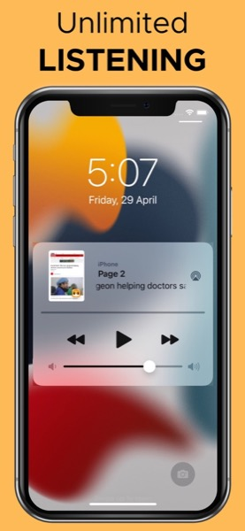

How to make your iPhone read text aloud
Your iPhone can already speak text out loud. Here is how to switch it on, and when a dedicated text to speech app is the better choice.
Updated November 2026
Free way: Speak Selection and Speak Screen
- Open Settings, then Accessibility, then Spoken Content.
- Turn on Speak Selection and Speak Screen.
- To hear a few lines, select the text and tap Speak.
- To hear a whole screen, swipe down from the top of the screen with two fingers.
This is great for short pieces. For long documents it has limits: it reads what is on the screen, it can stop when you leave the app, and it is easy to lose your place.
For long reading: Reader
- Open Reader and add a PDF from Files, a web page, or a scan of printed paper.
- Tap play. Choose a voice and a speed that suit you.
- Lock your phone or switch apps. Reader keeps reading in the background, with controls on the lock screen.

Which one should you use?
| Built-in | Reader | |
|---|---|---|
| Cost | Free | Free to download, optional Premium |
| Short text | Great | Good |
| Long PDFs and articles | Hard to follow | Made for it |
| Saves a list to hear later | No | Yes |
| Speed range | Limited | Up to 8x |
| Reads scanned paper | No | Yes |
Common questions
Can I change the voice?
Yes, in both. Reader offers more than 50 voices in over 35 languages and lets you add new ones.
Does it work in other languages?
Yes. Pick a voice for the language of your text, for example Arabic, Spanish or Chinese.